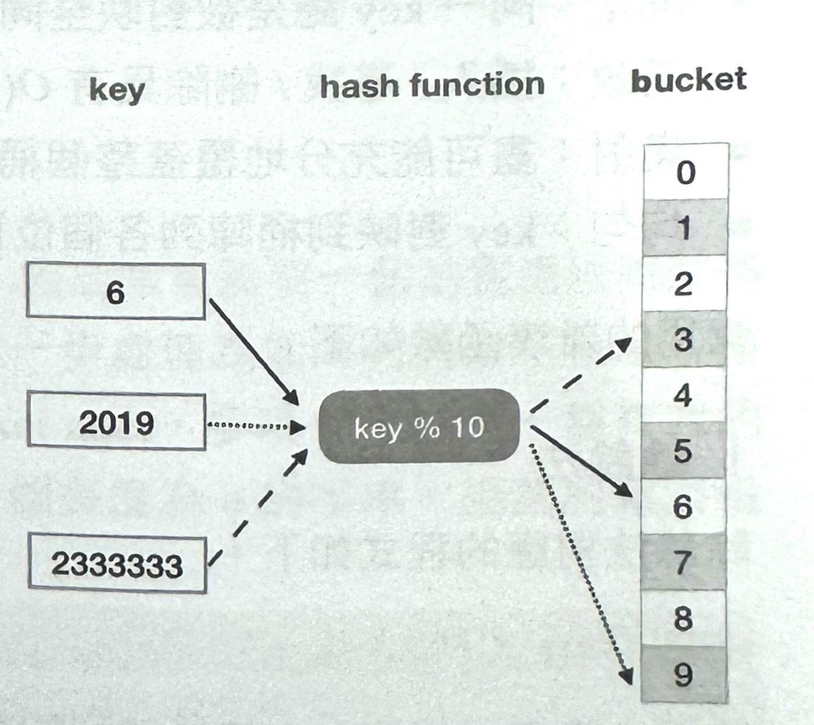

1-9-1 資料結構
資料結構是電腦中組織和儲存資料的特定方式,目的是方便且高效率地對資料進行存取和修改。一方面,資料結構表述了資料之間的關係,以及操作資料的一系列方法,資料又是程式的基本單元,因此無論是哪種語言、哪個領域,都離不開資料結構:另一方面,資料結構是演算法的基礎,其本身包含了演算法的部分內容。也就是說,想要掌握演算法,先有一個牢固的資料結構基礎是必要條件。
前端領域也到處表現資料結構的應用,尤其是隨需求的複雜度上升,前端工程師越來越離不開資料結構。React、Vue 些設計的架構,上線文件編輯系統、大型管理系統,甚至一個簡單的檢索需求,都離不開資料結構的支援。是否掌握了這個困難是進階的重要考量。
資料結構分為以下8大類。
- 陣列:Array
- 堆疊:Stack
- 佇列:Queue
- 結串列:LinkedList
- 樹:Tree
- 圖:Graph
- 字典樹:Trie
- 雜湊表(雜湊表):Hash Table
堆疊和佇列
堆疊和佇列是一種操作受限的線性結構,它們非常簡單,雖然 JavaScript 並沒有原生內建這樣的資料結構,但是可以輕鬆地將它們模擬出來。
堆疊的實現遵循後進先出(Last,First Out LIFO) 原則,範例程式如下：
class Stack {
constructor(...args) {
this.stack = {...args}
}
// Modifiers
push(...items) {
return this.stack.push(... items)
}
pop() {
return this.stack.pop()
}
peek() {
// Element access
return this.isEmpty()
? undefined
: this.stack[this. size () - 1]
}
// Capacity
isEmpty() {
return this.size() == 0
}
size() {
return this.stack.length
}
}
佇列的實現遵循先進先出(First in, First out FIFO )原則,範例程式如下：
class Queue {
constructor(. ..args) {
this.queue = [...args]
}
// Modifiers
enqueue(...items) {
return this.queue.push(... items)
}
dequeue () {
return this.queue.shift()
}
// Element access
front() {
return this.isEmpty()
? undefined
: this.queue[0]
}
back () {
return this.isEmpty()
? undefined
: this.queue[this.size() - 1]
}
// Capacity
isEmpty() {
return this.size() == 0
}
size() {
return this.queue.length
}
}
堆疊和佇列的實際應用場景比比皆是,例如下面這些。
- 瀏覽器的歷史記錄,因為回復總是回復到上一個最近的頁面,所以它需要遵循堆疊的原則。
- 與瀏覽器的歷史記錄類似,任何 undo/redo 都是以堆疊為基礎的實現。
- 在程式中,廣泛應用遞迴產生的呼叫堆疊同樣也是堆疊思想的表現。
- 同上,瀏覽器在拋出例外時,通常都會拋出呼叫堆疊資訊。
- 在電腦科學領域中的應用也比較廣泛,如進位轉換、括號比對、堆疊混洗、運算式求值等。
- 佇列的應用更為直觀,所謂的巨任務/微任務都是佇列, 不管是什麼類型的任務,都是先進先執行。
- 在後端中的應用也比較廣泛,如訊息佇列(RabbitMQ、ActiveMQ 等)，這種佇列能造成延遲緩衝的功效。
總結以上，不管是堆疊還是佇列,都是用陣列來模擬的。陣列是最基本的資料結構,但是它的價值是驚人的。這裡稍微提一下,React 中 hook 從本質上看可以簡單地被看作陣列。
鏈結串列
堆疊和佇列都可以用陣列實現,鏈結串列同樣和陣列一樣,都是按照一定的順序儲存元素的,不同的地方在於鏈結串列不能像陣列一樣透過索引對元素進行存取,而是透過每個元素指向其下一個元素的方式進行存取。
直觀上可得出這樣一個結論:鏈結串列不需要一段連續的儲存空間,「指向下一個元素」的方式能夠更大限度地利用記憶體。
根據以上結論可以繼續歸納出鏈結串列的優點,如下。
- 鏈結串列的插入和刪除操作的時間複雜度是常數級的,只需要改變相關節點的指標指向即可。
- 鏈結串列可以像陣列一樣循序存取元素，尋找元素的時間複雜度是線性的。
下面來看一看鏈結串列的應用場景。
React 的核心演算法 Fiber 就是透過串列實現的。 React 最早使用堆疊協調(stack reconciler)排程演算法。堆疊協調排程演算法最大的問題在於它是像函數呼叫堆疊一樣,遞迴地自頂向下地進行 diff 和 render 相關操作的,在堆疊協調排程演算法執行的過程中,該排程演算法始終佔據瀏覽器主執行緒。也就是說在此期間,使用者的互動所觸發的版面配置行為、動畫執行任務都不會被立即回應,進一步影響使用者體驗。
因此,React Fiber 將繪製更新過程進行了拆解,簡單說,就是每次檢查虛擬 DOM 的一小部分,在檢查間隙會檢查是否還有時間繼續執行下一個虛擬 DOM 樹上的某個分支任務,同時觀察是否有更優先的任務需要回應,如果沒有時間執行下一個虛擬 DOM 上的某個分支任務,有更高優先順序的任務,React 就會讓出主執行緒,直到主執行緒不忙的時候繼續執行那個分支任務。
所以,React Fiber其實很簡單,將堆疊協調過程分成區塊,一次執行一區塊,執行完一區塊之後需要將結果儲存起來,根據是否還有空閒的回應時間 (requestIdleCallback)來決定下一步策略。當所有的區塊都已經執行完畢後,就進入提交階段,這個階段需要更新 DOM,整個過程是一口氣同步完成的。
React Fiber 是專門用於 React 元件堆疊呼叫的重新實現,可以隨意中斷呼叫堆疊並手動操作呼叫堆疊,也就是說一個 Fiber 就是一個虛擬堆疊幀,其結構如下所示。
function FiberNode(
tag: WorkTag,
pendingProps: mixed,
key: null | string,
mode: TypeOfMode,
){
// Instance
// ...
this.tag = tag;
// Fiber
this.return = null;
this.child = null;
this.sibling = null;
this.index = 0;
this.ref = null;
this pendingProps = pendingProps;
this.memoizedProps = null;
this.updateQueue = null;
this.memoizedState = null;
this.dependencies = null;
// Effects
// ...
this.alternate = null;
}
這麼看,Fiber 就是一個物件,透過 parent、children、sibling, 同時,parent、children、sibling 又都是 Fiber 結構,FiberNode.alternate 這個屬性用來儲存上一次繪製的結果,事實上整個 Fiber 模式就是一個鏈結串列。React 也借此從依賴於內建堆疊同步遞迴模型,變為具有鏈結串列和指標的非同步模型了。
實際的繪製過程如下。
function renderNode(node) {
// 判斷是否需要繪製該節點,如果 props 發生變化,則呼叫 render
if (node.memoizedProps !== node.pendingProps) {
render(node)
}
// 是否有子節點,如果有則進行子節點繪
if (node.child !== null) {
return node.child
// 是否有兄弟節點,如果有則進行兄弟節點繪製
} else if (node.sibling !== null){
return node.sibling
// 沒有子節點和兄弟節點
}else if (node.return !== null){
return node. return
} else {
return null
}
}
function workloop(root) {
nextNode = root
while (nextNode !== null && (no other high priority task)) {
nextNode = renderNode (nextNode)
}
}
注意,在 workloop 中, while 的條件是 nextNode!==null &&(no other high priority task)，這是描述 Fiber 工作原理的關鍵虛擬程式碼。以上只是簡略的虛體程式碼用於說明鏈接串列的資料結構，並沒有介紹 requestAnimationFame(callback)和 requestIdleCallback(callback) 的實現，這裏重點是體會鏈結串列資料結構的思想。
鏈結串列實現
實現鏈結串列首先串進行分類,常見的有單向鏈接串列和雙向鏈結串列。
有了節點類別,下面來初步實現雙向鏈結串列類別
- 單向鏈結串列:單向鏈結串列是維護一系列節點的資料結構,其特點是每個節點都包含資料,同時包含指向鏈結串列中下一個節點的指標。
- 雙向鏈結串列:與單向鏈結串列不同,雙向鏈結串列的特點是每個節點除了包含其資料,還包含分別指向其前驅節點和後繼節點的指標。
(單向案例要另外找)
根據雙向鏈結串列的特點,實現一個節點建構函數(節點類別)的程式如下。
class DoublyLinkedList {
constructor() {
// 雙向鏈結串列的開頭
this.head = null
// 雙向鏈結串列的結尾
this.tail = null
}
// ...
}
接下來,需要實現雙向鏈結串列原型中的一些方法,這些方法包含以下幾種。
- add:在鏈結串列尾部增加一個新的節點。
- addAt:在鏈結串列指定位置增加一個新的節點。
- remove:刪除鏈結串列指定資料項目節點。
- removeAt:刪除鏈結串列指定位置節點。
- reverse:翻轉鏈結串列。
- swap:交換兩個節點資料。
- isEmpty:查詢鏈結串列是否為空。
- length:查詢鏈結串列長度。
- traverse:檢查鏈結串列。
- find:尋找某個節點的索引。
來逐一實現鏈結串列的各種方法，add方法的程式如下。
add(item) {
// 產生實體一個節點
let node = new Node(item)
// 如果目前鏈結串列還沒有頭
if(!this.head) {
this.head = node
this.tail = node
}
//如果目前鏈結串列已經有了頭,則只需要在尾部加上該節點
else {
node.prev = this.tail
this.tail.next = node
this.tail = node
}
}
addAt 方法的程式如下。
addAt(index, item) {
let current = this.head
let counter = 1
let node = new Node(item)
//如果在頭部插入
if (index === 0) {
this.head.prev = node
node.next = this.head
this.head = node
}
//如果在非頭部插入,則需要從頭開始找尋插入位置
else {
while(current) {
current = current.next
if( counter === index) {
node.prev = current.prev
current.prev.next = node
node.next = current
current.prev = node
}
counter++
}
}
}
remove 方法的程式如下。
remove(item) {
let current = this.head
while (current) {
//找到了目標節點
if (current.data === item ) {
//目標鏈結串列只有目前目標項,即目標節點既是鏈結串列頭又是鏈結串列尾
if (current == this.head && current == this.tail) {
this.head = null
this.tail = null
}
//目標節點為鏈結串列頭
else if (current == this.head ) {
this.head = this.head.next
this.head.prev = null
}
//目標節點為鏈結串列尾
else if (current == this.tail ) {
this.tail = this.tail.prev;
this.tail.next = null;
}
//目標節點在鏈結串列首尾之間,即中部
else {
current.prev.next = current.next;
current.next.prev = current.prev;
}
}
current = current.next
}
}
removeAt方法的程式如下。
removeAt (index) {
// 都是從頭開始檢查
let current = this.head
let counter = 1
//删除鏈結串列頭部
if (index === 0 ) {
this.head = this.head.next
this.head.prev = null
}
else {
while(current) {
current = current.next
//如果目標節點在鏈結串列尾部
if (current == this.tail) {
this.tail = this.tail.prev
this.tail.next = null
}
else if (counter === index) {
current.prev.next = current.next
current.next.prev = current.prev
break
}
counter++
}
}
}
reverse 方法的程式如下。
reverse() {
let current = this.head
let prev = null
while (current) {
let next = current.next
//前後倒置
current.next = prev
current.prev = next
prev = current
current = next
}
this.tail = this.head
this.head = prev
}
swap方法(用於交換兩個節點的資料值)的程式如下。
swap(index1, index2) {
// 使 index1 始終小於 index2 ,方便後面尋找交換
if (index1 > index2) {
return this.swap(index2, index1)
}
let current = this.head
let counter = 0
let firstNode
while(current !== null) {
// 找到第一個節點,並儲存起來
if (counter === index1 ){
firstNode = current
}
//找到第二個節點,並進行資料交換
else if (counter === index2) {
// ES 提供了更簡潔的交換資料的方法,這裡用傳統方式實現更為直觀
let temp = current.data
current.data = firstNode.data
firstNode.data = temp
}
current = current.next
counter++
}
return true
}
isEmpty 方法的程式如下。
isEmpty () {
return this.length() < 1
}
isEmpty 方法使用了 length 方法實現，length 方法的程式如下。
length() {
let current = this.head
let counter = 0
while(current !== null) {
counter++
current = current.next
}
return current
}
length 方法透過檢查結串列傳回鏈結串列長度。
traverse 方法的程式如下。
traverse (fn) {
let current = this.head
while(current !== null) {
fn(current)
current = current.next
}
return true
}
有了上面 length 方法的檢查實現， traverse 方法也就不難了解了，它接收一個檢查執行函數,在 while 循環中進行呼叫。
最後，search方法的程式如下。
search(item) {
let current = this.head
let counter = 0
while( current ) {
if( current.data == item ) {
return counter
}
current = current.next
counter++
}
return false
}
至此就實現了所有 DoublyLinkedList 類別向鏈結串列的方法。仔細分析一下整個實現過程可以發現,雙向鏈結串列的實現並不複雜,在手寫過程中需要開發者做到「心中有表」,考慮到目前節點的 next 和 prev 設定值,其在邏輯實現上還是很簡單的。
掌握了這些內容,再回想一下鏈結串列的應用,以及 React Fiber 的設計和實現,也許一切就都變得不再神秘。
樹
不同於之前介紹，樹是非線性的。因為樹決定了其儲存的資料有明確的層級關係，因此對於維護具有層級特性的資料,樹是一個天然良好的選擇。
前面提到,樹有很多種分類,但是它們都具有以下特性。
- 除了根節點,所有的節點都有一個父節點。
- 每一個節點都可以有許多個子節點,如果沒有子節點,那麼就稱此節點為葉子節點。
- 一個節點所擁有的葉子節點的個數被稱為該節的度,因此葉子節點的度為0。
- 在所有節點中,最大的度為整棵樹的度。
- 樹的最大層次被稱為樹的深度。
從應用上來看,前端開中的DOM 就是樹狀結構;同理,不管 是React 還是 Vue 的虛擬 DOM 也都是樹。
二元搜尋樹的實現和檢查
二元樹是最基本的樹,因為它的結構最簡單,每個節點最多包含兩個子節點。二元樹又非常有用,因為根據二元樹可以延伸出二元搜尋樹(BST)、平衡二元搜尋樹(AVL)、紅黑樹(R/BTree)等。
二元搜尋樹有以下特性。
- 左子樹上所有節點的值均小於或等於它的根節點的值。
- 右子樹上所有節點的值均大於或等於它的根節點的值。
- 左、右子樹也分別為二元搜尋樹。
根據其特性實現二元搜尋樹時，應該先建置一個節點類別,如下所示。
class Node{
constructor(data) {
this.left = null
this.right = null
this.value = data
}
}
接著,按照慣例實現二元搜尋樹的以下方法。
- insertNode:根據一個父節點插入一個子節點。
- insert:插入一個新節點。
- removeNode:根據一個父節移除一個子節點。
- remove:移除一個節點。
- findMinNode:取得子節點的最小值。
- searchNode:根據一個節點找子節點。
- search:尋找節點。
- preOrder:前序検查。
- InOrder:中序檢查。
- PostOrder:後續檢查。
下面來實現樹結構的各種方法，insertNode 和 insert 方法的程式如下。
insertNode (root, newNode) {
if (newNode.value < root.value) {
(root.left) ? root.left= newNode : this.insertNode(root.left,newNode)
} else {
(!root.right) ? root.right =newNode : this.insertNode(root.right,newNode)
}
}
insert (value) {
let newNode = new Node(value)
if (!this.root) {
this.root = newNode
} else {
this.insertNode(this.root, newNode)
}
}
insertNode方法先判斷目標父的值,如果插入節點的值更小,則放到父節點的左邊,接著遞迴呼this.insertNode(root.left,newNode); 如果插入節點的值更大,則放到父節點的右邊。
insert 方法中多了建置 Node 節點實例這一步,而 removeNode 和 remove 方法 的程式如下。
removeNode(root, value) {
if(!root) {
return null
}
if (value < root.value) {
root.left = this.removeNode(root.left, value)
return root
} else if (value > root.value) {
root.right = tis.removeNode(root.right, value)
return root
} else {
//找到需要刪除的節點
//如果目前 root 節點無左右子節點
if (!root.left && !root.right) {
root = null
return root
}
// 只有左節點
if (root.left && !root.right) {
root = root.left
return root
}
// 只有右節點
else if (root,right) {
root = root.right
return root
}
// 有左右兩個子節點
let minRight = this.findMinNode(root.right)
root.value = minRight.value
root.right = this.removeNode(root.right, minRight.value)
return root
}
}
remove (value) {
if (this.root) {
this.removeNode(this.root, value)
}
}
上述程式可能最需要思考的就是要刪除的節點含有左右兩個子節點的情況。
當需要刪除的節點(目標節點)含有左右兩個子節點時,因為要把目前節點刪除,所以就需要找到合適的補位節點,這個補位節點一定在該目標節點的右側樹中,因為這樣才能確保補位節點的值一定大於該目標節點的左側樹所有節點的值,而該目標節點的左側樹不需要調整;同時,為了確保補位節點的值一定要小於該目標節點的右側樹節點的值,要找到的補位節點應該是該目標節點的右側樹中值最小的那個節點。下面借助 this.fndMinNode 方法實現這個過程。
findMinNode (root) {
if (!root.left) {
return root
} else {
return this.findMinNode(root.left)
}
}
該方法會不斷進行遞迴,直到找到最左側的葉子節點。
尋找節點的方法(searchNode 和 search) 的實現程式如下。
searchNode(root, value) {
if (!root) {
return null
}
if (value < root.value) {
return this.searchNode(root.left, value)
}else if (value > root.value) {
return this.searchNode(root.right, value)
}
return root
}
search(value) {
if (!this.root) {
return false
}
return Boolean(this.searchNode(this.root, value))
}
前序檢查程式如下。
preOrder(root) {
if (root) {
console.log(root.value)
this.preOrder(root.left)
this.preOrder(root.right)
}
}
中序檢查的範例程式如下。
inOrder(root) {
if (root) {
this.inOrder(root.left)
console,log(root.value)
this.inOrder(root.right)
}
}
後序檢查的範例程式如下。
postOrder(root) {
if (root) {
this.postOrder(root.left)
this.postOrder(root.right)
console.log(root.value)
}
}
前序檢查、中序查、後序查的區別其實就在於,執行console.log(root.value)方法的位置不同。
字典樹
樹(Trie)是針對特定類型的搜尋而最佳化的樹資料結構,典型的實例是 autoComplete,也就是說,它適合實現透過部分值得到完整值的場景。字典樹因此也是一種搜尋樹,有時候也被叫作字首樹,因為任意一個節點的後代都 存在共同的字首。下面歸納一下它的特點。
- 字典樹能做到高效查詢和插入,時間複雜度為O(k), k為字串長度。但是如果大量字串沒有共同字首,那就會很耗記憶體,
- 最極端的情況,所有字都沒有共同字首時,這棵字典樹的圖形可以幫助理解這一點。
- 字典樹的核心就是減少不必要的字元比較,獲得較高的查詢效率,也就是說用空間換時間,再利用共同字首來加強查詢效率。
除了剛剛提到的 autoComplete 自動填充的情況,字典樹還有很多其他應用場景,例如搜尋、輸入法選項、分類、IP位址檢索、電話號碼檢索等。
字典樹的實現和檢查
實現一個字典樹上 程式如下。
class PrefixTreeNode{
constructor(value){
//儲存子節點
this.children = {}
this.isEnd = null
this.value = value
}
}
字典樹 PrefixTree 承繼 PrefixTreeNode 類別,程式如下。
class prefixTree extends PrefixTreeNode {
constructor() {
super(null)
}
}
接著在 PrefixTree 繼承 PrefixTreeNode 類別的基礎上實現以下方法。
- addWord:建立一個字典樹節點。
- predictWord:指定一個字串,傳回字典樹中以該字串開頭的所有單字。
addWord 方法的實現程式如下。
addWord(str) {
const addWordHelper = (node, str) => {
//目前node不含目前 str 開頭的目標
if (!node.children[str[0]]) {
// 以目前 str 開頭的第一個字母建立一個 PrefixTreeNode實例
node.children[str[0]] = new PrefixTreeNode(str[0])
if (str.length === 1) {
node.children[str[0]].isEnd = true
} else if (str.length > 1) {
addWordHelper(node.children[str[0]], str.slice(1))
}
}
}
addWordHelper(this, str)
}
predictWord 方法的實現程式如下。
predictWord(str) {
let getRemainingTree = function(str, tree){
let node = tree
while (str) {
node = node.children[str[0]]
str = str.substr(1)
}
return node
}
// 該陣列維護所有以 str 開頭的單字
let allWords = []
let allWordsHelper = function(stringSoFar, tree){
for (let k in tree.children) {
const child = tree.children[k]
let newString = stringSoFar + child.value
if (child.endWord) {
allWords.push(newString)
}
allWordsHelper(newString, child)
}
}
let remainingTree = getRemainingTree(str, this)
if (remainingTree) {
allWordsHelper(str, remainingTree)
}
return allWords
}
圖
圖是由具有邊的節點集合組成的資料結構,圖可以是定向的,也可以是不定向的。因此,圖可以分為好多種類,主要是根據場景來進行分類,如下所示。
- LBS ( Location Based Services),以位置為基礎的服務及GPS 系統。
- 社交媒體網站的使用者關係圖。
- 前端專案化中的開發依賴圖。
- 搜尋演算法使用圖,用於確保搜尋結果的相關性。
圖也是應用最廣泛的資料結構之一,真實場景中處處都有圖的應用。需要了解圖的幾種基本元素，如下。
- Node: 節點
- Edge: 邊
- [V]: 圖中頂點(節點)的總數
- [E]: 圖中的連接總數(邊)
圖的實現和檢查
這裡主要實現一個有方向圖 Graph 類別,程式如下。
class Graph {
constructor() {
this.AdjList = new Map()
}
}
圖的建構方法還需要表明圖中各個頂點之間的關係,使用 Map 資料結構來實現對這種關係的維護。
接下來,需要實現以下方法。
- 增加頂點: addVertex
- 增加邊: addEdge
- 列印圖: print
- 廣度優先演算法(BFS)
- 深度優先演算法(DFS)
addVertex 方法的程式如下。
addVertex(vertex) {
if (!this.AdjList.has(vertex)){
this.AdjList.set(vertex, [])
} else {
throw 'vertex already exist!'
}
}
建立頂點的程式如下
let graph = new Graph();
graph.addVertex('A')
graph.addVertex('B')
graph.addVertex('C')
graph.addVertex('D')
其中,A、B、C、D 頂點都對應一個陣列,如下。
'A' => [],
'B' => [],
'C' => [],
'D' => [],
該陣列將用來儲存邊。舉例來說,透過以下描述,就可以把一個圖表現出來。
Map {
'A' => ['B', 'C', 'D'],
'B' => [],
'C' => ['B'],
'D' => ['C']
}
如何獲得上述程式表述的關係呢?首先要實現 addEdge方法,該方法需要兩個參數:一個是頂點 vertex,另一個是連線物件 node,實際程式如下。
addEdge (vertex, node) {
if (this.AdjList.has(vertex)) {
if (this.AdjList.has(node)){
let arr = this.AdjList.get(vertex)
if(!arr.includes (node) ) {
arr.push (node)
}
} else {
throw `Can't add non-existing vertex ->'${node}'`
}
} else {
throw 'You should add '${vertex}' first`
}
}
釐清資料關係,就可以 Print 圖了,這裡只用到一個很簡單的 for...of 迴圈。
print() {
for (let [key, value] of this.AdjList) {
console.log(key, value)
}
}
剩下要做的就是檢查圖。
廣度優先演算法(BFS)是一種利用佇列實現的搜尋演算法。對圖來說,其搜尋過程和「向湖丟進一塊石頭激起層層漣漪」類似。換成演算語言,就是從起點出發,對於每次出佇列的點都要檢查其四周的點。因此,BFS 實現步驟如下。
- 以起始節點作為開頭初始化一個空白物件: visited
- 初始化一個空陣列,該陣列將模擬一個佇列。
- 將起始節點標記為已存取。
- 將起始節點放入佇列中。
- 循環檢查直到佇列為空。
遵循以上步驟實現 BFS 的程式如下。
createVisitedObject(){
let map = []
for(let key of this.AdjList.keys()){
arr[key] = false
}
return map
}
bfs(initialNode) {
// 建立一個已存取節點的 map
let visited = this.createVisitedObject()
// 模擬一個佇列
let queue = []
// 第一個節點已存取
visited[initialNode] = true
// 第一個節點入佇列
queue.push(initialNode)
while(queue.length) {
let current = queue.shift()
console.log(current)
// 獲得該節點的其他節點關係
let arr = this.AdjList.get(current)
for (let elem of arr) {
// 如果目前節點沒有存取過
if (!visited[elem]) {
visited[elem] = true
queue.push(elem)
}
}
}
}
對於深度優先搜尋演算法(DFS),可以將它的特點歸納為「不撞南牆不回頭」，從起點出發,先把一個方向的點都檢查完才會改變方向。換成演算語言就是,DFS是利用遞迴實現的搜尋演算法。
在實現 DFS 時要作為起建立存取物件,同時呼叫輔助函數從起始節點開始遞迴,實現程式如下。
createVisitedObject() {
let map = {}
for (let key of this.AdjList.keys()) {
arr[key] = false
}
return map
}
dfs(initialNode) {
let visited = this.createVisitedObject()
this.dfsHelper(initialNode, visited)
}
dfsHelper(node, visited) {
visited[node] = true
console.log(node)
let arr = this.AdjList.get(node)
for (let elem of arr) {
if (!visited[elem]) {
this.dfsHelper(elem, visited)
}
}
}
BFS 的重點在於檢查佇列,而 DFS 的重點在於遞迴,這是它們之間的本質別。
圖在前端中的應用
圖其實在前端中的應用不算特別多,但絕對是不容忽視的一部分。這裡舉一個在現實中應用的實例：循環圖表。
專案化發展的今天,釐清專案中的依賴關係有助開發者在巨觀上把控專案化專案。在專案中,借助 mermaidj 畫圖工具實現了專案依賴視覺化,並借助 npm script 來產生圖片結果，相關 script 指令稿執行方程式如下。
yarn graph
graph 指令稿的實現如下。
import glob from 'glob'
import readJSON from 'xxx/utils/readJSON'
const pkgs = glob.sync('packages/\*/package.json').map(readJSON)
const deps = {}
for (const pkg of pkgs) {
deps[pkg.name] =Object.keys(pkg.dependencies || []).filter(
dep=> //...
)
}
const graph = { code: '', mermaid: { theme: 'default'}}
graph.code += 'graph TD;'
for (const name in deps) {
for (const dep of deps[name]) {
graph.code += `${name}-->${dep};`
}
}
const base64 = Buffer.from(JSON.stringify(graph)).toString('base64')
/* eslint-disable-next-line */
console.log(
`Open in browser: https://mermaidjs.github.io/mermaid-live-editor/#/
edit/${base64}`
)
上述程式首先取得到packages/*/package.json中宣告的所有依賴,對依賴進行必要過濾之後,將其儲存到deps物件中,按照mermaid 需求將 monorepo 專案中的每一個子專案名稱和依賴為間隔儲存到 graph.code中最後將 graph 變數產生為 base64 類類型資料,並交給 mermaid 進行繪圖,繪圖過程中會根據約定(-->的標記)產生視覺化的依賴圖。
在專案中,這個依賴圖對專案的部署建置有非常重要的作 ,在對 monorepo 專案進行建置時,因為子專案過多會導致建置時間過長。為此,方案定為增量建置,如果這次改動只設計專案 A、專案 B、公共依賴 C,那麼專案 C、專案 D等其他專案在建置時只需要讀取快取建置結果即可。建置的想法很簡單,但是有一個直接的問題是,如作檢測出真正需要建置的專案呢?
舉個實例,專案 A 依賴公共依賴 C,那麼及時透過 git hook 拿到的 diff 表明專案 A 中沒有程式變動,但是可能因 C 變了而需要重新建置專A (因A依賴C) 按照正常的想法,這樣做需要檢查整個專案,所以會增加回溯建置的可能,也就是建置時先查A快取,檢查C時不得 不回復到A，進行重新建置。解決想法就是使用一個拓撲圖,根據拓撲圖按照一定的順序進行檢查和編譯建置。
雜湊表
雜湊表是一種 key-value 形式儲存資料的資料結構,可以把雜湊表了解為一種進階陣列,這種陣列的索引可以是很大的整數、浮數、字串,甚至是結構。這種資料結構非常有用, JavaScript 中 Map、Set、WeakMap、WeakSet 在 JavaScript v8 版本中都是透過雜湊表實現的,在 LRU Cache、資料庫索引等很多場景中也能看到雜湊表的身影。
雜湊表並不僅是一種技術,從某種意義上講,它甚至是一種思想。
現在要儲存 key 為 6、2019、2333333 的 3 組資料,如果用陣列來儲存,則至少需要一個長度為 2333333 的陣列做件事情,這種做法顯然存在大量空間浪費。
也可以像 圖1 所示的那樣，準備一個長度為 10 的桶陣列(buck array),將每一個 key透過一個雜湊函數(hash function)對映到桶陣列中,將 key 對應的值直接存入即可。可以看到,這種方式只需要使用一個長度為 10 的陣列,而且尋找和插入的時間複雜度都是O(1)。這就是雜湊表的核心思想。
圖1
雜湊表中的幾個概念如下。
- 桶(bucket)：用來直接儲存或間接指向一個資料。
- 桶陣列(bucket array)：由桶組成的陣列。
- 雜湊函數(hash function)：將 key 轉為桶陣列索引的函數。
上面的實例比較簡單,如果繼續在之前的基礎上儲存一個key 為 9 的資料,那麼透過 9%10 計算得出的 key 也索引為 9 的 bucket上,此時有兩個不同的 key 落在了同一個 bucket 上,這一現象被稱為雜湊衝突。
雜湊衝突在理論上是不可避免的,主要可以從以下兩個方面進行最佳化。
- 精心設計桶陣列長度及雜湊函數,盡可能降低衝突的機率。
- 發生衝突時,能對衝突進行排解。
假設需要儲存的元素個數為 N ,直接用陣列進行儲存需要的陣列長度為R,而用雜湊表儲存需要的桶陣列長度為M,則一定存在以下關係:N <M<<R,只有這樣,雜湊表才能既保持操作的高效又能節省空間。
其中, N 和 M 的比值被稱為雜湊表載入因數,當載入因數超過一定的設定值時,就需要對桶陣列擴充並 rehash。
理想的雜湊函數遵循以下設計原則。
- 確定: 同一 key 總是被對映至同一位址。
- 高效: 插入/尋找/刪除具有 O(1)時間複雜度。
- 滿射: 盡可能充分地覆蓋整個桶陣列空間。
- 均勻: key 對映到桶列陣各個位置的機率儘量接近。
常用的雜湊函數如下。
1.除餘法
除餘法對應的程式如下。
hash(key) = key % M
這種方法會直接對 key 按桶陣列的長度取餘數 ,但存在以下缺陷。
- 存在不動點 ：無論桶陣列長度 M 取何值,總有hash(0)=0，這與任何元素都有均等的機率被對映到任何位置的原則相違背。
- 零階均勻：[0,R) 的關鍵碼被平均分配至 M 個桶,但相鄰關鍵碼的雜湊地址也必相鄰。
2. MAD ( Multiply-Add-Divide) 法
MAD 法對應的程式如下。
hash(key) = (a x key + b) % M
與除餘法相比,MAD 法引用的數可以被作偏移量,能夠用於有效地消除不動點,另一個變數 a 則扮演著步進值的角色,也就是說,原本相鄰的關鍵碼在經過雜湊處理後步進值為 a,進一步不再繼續相鄰。
3.平方取中法(Mid-Square)
取 key^2 的中間許多位組成以下位址。
hash(123)=512 // 保留 key^2=123^2=15219 的中間3位
hash(1234567)=556 // 1234567^2 =1524155677489
可以將一個數的平方運算分解為一系列的左移操作及許多次加法,每個數字都是由原關鍵碼中的許多個數字經求和獲得的,因此兩側的數字由更少的原數字求和而得,越是置中的數字,越是由更多的原數字累積而得,因此截取置中的許多個數字可使原關鍵碼的各個數字都能對最後結果產生影響，進一步實現更好的均勻性。
4.多項式法
在實際應用中,key不一定都是整數形式,因此常常需要一個前置處理將其轉雜湊碼(hash code),然後才可以將其進一步處理為桶陣列的索引位址。整個過程可以描述為key --> hash code -->bucket addr, 多項式法就是一種有效的將字串 key 轉為 hash code 的方法。對於一個度為 n 的字串,相關的雜湊函數計算過程如下。
hash(x0 x1 ... xn-1) = x0 * a^(n-1) + x1 * a^(n-2) ... + xn-2* a + xn-1
// 如果對上面的法不是很了解,可以看一下下面這種相等寫法
(...((x0* a +x1) * a+x2) *a+ ... xn-2) * a+ xn-1)
實際的專案中採用以下這種近似多項式的快速做法,程式如下
function hash(key) {
let h =0
for (let n = key.length, i = 0; i != n; itt) {
h=(h<<5|h>>27)
h += key[i].charCodeAt()
}
return h >>> 0
}
透過一個循環依次處理字串的每一個字元，將每個字元轉為整數後累加，在累加之前對原有的累積值按照 h<<5|h>>27 這樣的規則做一個數位轉換。
上述過程可以簡單地用圖2 來表現。
圖2
這一累加過程實際上是對以上多項式計算的近似演算法,只不過這裡消除了相對耗時的乘法運算。
還有很多實現雜湊函數的方法,如折疊法、位互斥法、(偽)隨機數法...等等,每種方法都有各自的特點及應用場 景。
總之,雜湊函數產生的關鍵碼越是隨機,越是沒有規律就越好。
主要的處理雜湊表衝突的方法有開鏈法和探測法。
開鏈法(linked-list chaining/separate chaining)
每個桶中儲存一個指標,將衝突的 key 以鏈結串列的形式組織起來，這種處理方式最大的優點是能解決任意次數的衝突,但缺點也很明题,最極端的情況是當所有的 key 資料都落在一個桶中時,雜湊表將退化為一個鏈結串列，尋找、插入和刪除的複雜度都將變為 O(n)。
探測法(open addressing/closed hashing)
探測法的所有衝突都會在一塊連續的空間中獲得解決,而不用像開鏈法那樣申請額外的空間。當存入一個 key 時,所有的桶都會按照某種歐先順序關係排成一個序列,從本該屬於該 key 的桶出發,順序檢視每一個桶，直到找到可用的桶。每個 key 對應的這樣的序列,被稱為試探序列或尋找鏈。在尋找 key 時,沿尋找鏈尋找有兩種結果,一種是在桶中找到查詢的 key,也就是尋找成功;還有一種是找到了一個空桶,也就是尋找失敗,說明沒有這個key。
最簡單的試探序列的產生方法叫作線性試探(linear probing)，實際的做法是一旦發生衝突,就試探後一個緊鄰的桶單元,直到成功或失敗。這種做法的優點是無須附加的(指標、鏈結串列等)空間,缺也很明顯,就是以往的 衝突會導致後續的衝突。線性試探的程式如下。
[hash(key) + 1] % M
[hash(key) + 2] % M
[hash(key) + 3] % M
...
線性試探的問題根源在於大部分的試探位置都集中在某一個相對較小的局部，因此最佳化線性試探的方式就是適當地拉開各次探測間距，平方試探( Quadratic Probing) 就是以這一最佳化想法為基礎的實作方式。所謂平方試探,就是以平方數為距離,確定下一試探桶單元。
[hash(key) + 1^2] % M
[hash(key) + 2^2] % M
[hash(key) + 3^2] % M
...
相對於線性試探,平方試探的確可以在快速地緩解資料聚集的現象，在尋找戀上,各桶之間的間距線性遞增。
雜湊表的實作
用 JavaScript 模擬實現一下雜湊表,這裡採用開鏈法 解決雜湊衝突。實作方式程式如下。
// 單在鏈結串列節點
class ForwardListNode {
constructor(key, value) {
this.key = key
this.value = value
this.next = null
}
}
class Hashtable{
constructor(bucketSize = 97) {
this._bucketSize = bucketSize
this._size = 0
this._buckets = new Array(this._bucketSize)
}
hash(key) {
let h = 0
for (let n = key.length, i = 0; i != n; i++) {
h=(h<<5|h>>27)
h t= key[i].charCodeAt()
}
return (h >>> 0) % this._bucketSize
}
// Modifiers
put(key, value){
let index = this.hash(key);
let node = new ForwardListNode(key, value)
if (!this._buckets[index]) {
// 如果桶是空的,則直接把新節點放入桶中
this._buckets[index] = node
} else {
// 如果桶不為空,則在鏈結串列標頭插入新節點
node next = this._buckets[index]
this._buckets[index] = node
}
this._size++
return index
}
delete(key){
let index =this.hash(key)
if(!this._buckets[index]){
return false
}
// 增加一個虛擬頭節點,以便後面進行刪除操作
let dummy = new ForwardListNode(null, null)
dummy.next = this._buckets[index]
let cur = dummy.next, pre = dummy
while (cur) {
if (cur.key === key) {
// 從鏈結串列中刪除該節點
pre.next = cur.next
cur = pre.next
this._size--
} else {
pre = cur
cur = cur.next
}
}
this._buckets[index] = dummy.next
return true
}
// Lookup
find(key) {
let index = this.hash(key);
// 如果對應的桶為空,則說明不存在此 key
if (!this._buckets[index]) {
return null
}
// 檢查對應桶的鏈結串列
let p = this._buckets[index]
while (p) {
// 找到 key
if (p.key === key) {
return p.value
}
p = p.next
}
return null
}
// Capacity
size() {
return this._size
}
isEmpty() {
return this._size == 0
}
}